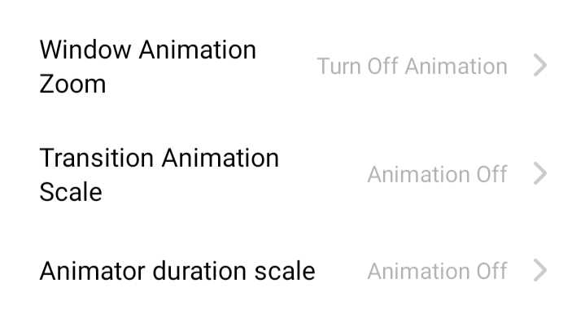
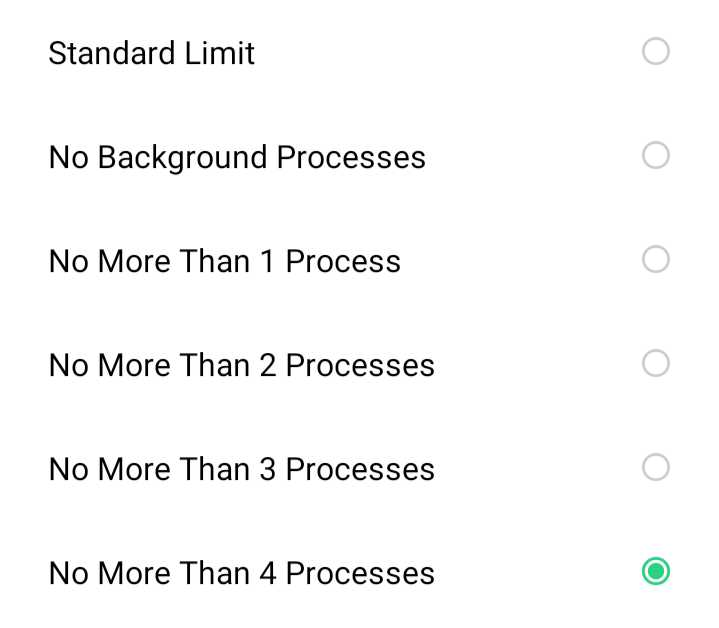

ഫോണിൻ്റെ സ്റ്റോറേജ് മാക്സിമം നിലനിർത്തുക.
ആവശ്യമില്ലാത്ത ഫയലുകൾ ഡിലീറ്റ് ചെയ്യുക.
പ്രോസസറിൻ്റെ ലോഡ് കുറയ്ക്കുന്നതിനായി Developer Options Enable ചെയ്ത ശേഷം (Developer Options Enable ചെയ്യാൻ Settings - About Phone ൽ Build Number ൽ തുടർച്ചയായി 7 തവണ ക്ലിക്ക് ചെയ്യുക. Settings ൽ Developer Options കാണാം.) അതിൽ താഴെ കാണുന്ന ഭാഗങ്ങൾ Off ചെയ്യുകയോ പരമാവധി കുറച്ചിടുകയോ ചെയ്യുക.
Developer Options ൽ Background Process Limit Standard Limit ആയിരിക്കും.
No More Than 4 Process എന്നാക്കുക.